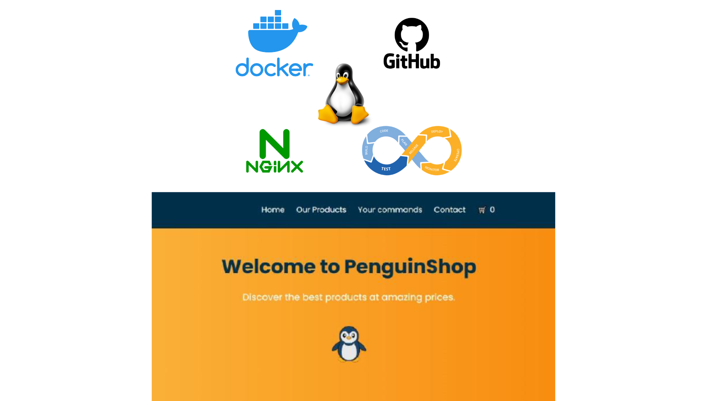
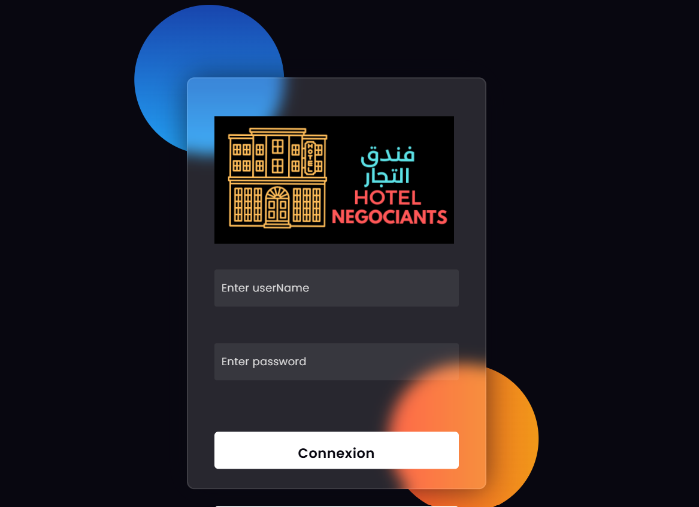
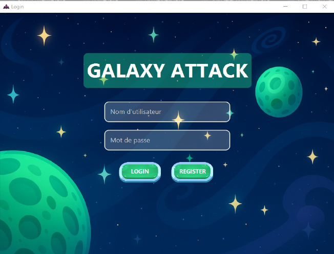
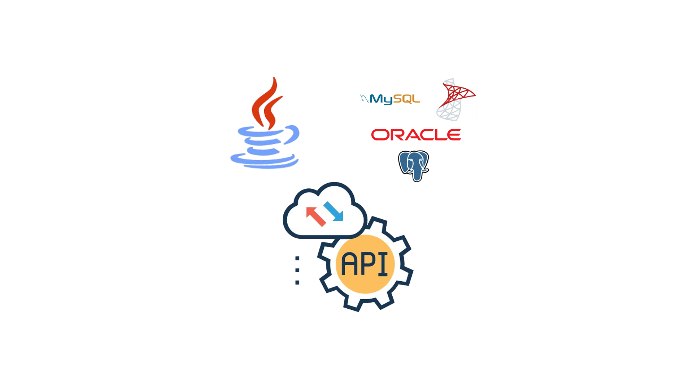
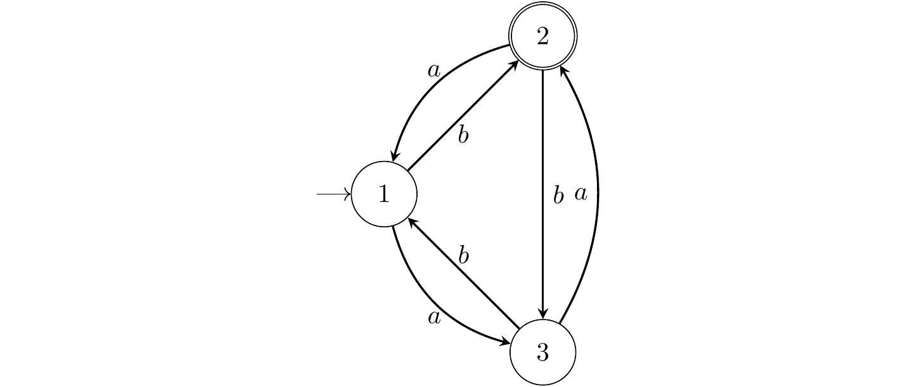

Mes Projets
Une sélection de projets académiques et techniques en IA, systèmes intelligents, sécurité, web, microservices et mobile.
Tous les projets sont affichés.

Environnement de développement web avec Docker sous Linux
Création d'une image Docker intégrant un environnement complet PHP/Laravel avec partage via Docker Hub.
Gestion du code source via GitHub, organisation du travail en équipe avec Jira, mise en place d'un pipeline CI/CD et développement d'un site e-commerce PenguinShop.

Hotel Management System
Réalisation complète d'un système de gestion hôtelière.
Analyse fonctionnelle, conception technique et développement en PHP avec une base de données MySQL pour gérer les opérations principales d'un hôtel.

VerdeNet
Plateforme web complète mettant en relation des clients avec des professionnels pour des services à domicile.
Gestion du cycle de vie d'une intervention, depuis la demande initiale jusqu'à la facturation et l'évaluation mutuelle, avec Laravel, VueJS, Tailwind et MySQL.

Jeu de Tir Spatial 2D en Java
Jeu vidéo 2D avec modes solo et multijoueur.
Développement avec JavaFX, Sockets TCP et architecture MVC pour structurer la logique de jeu, l'affichage et la communication réseau.

API Java Multi-SGBD
API modulaire pour opérations CRUD sur plusieurs systèmes de gestion de bases de données.
Support de MySQL, PostgreSQL et SQL Server avec configuration centralisée, architecture extensible et tests JUnit.
Site Web CAN Maroc 2025
Site web interactif dédié à la CAN Maroc 2025.
Interface responsive, animations JavaScript et intégration Bootstrap pour présenter l'événement de manière claire et dynamique.

Manipulation d'Automates Finis
Programme en C pour créer, analyser et optimiser des automates.
Support des fichiers .dot et fonctionnalités autour de la manipulation d'automates finis dans un contexte algorithmique.

Project-Manager
Plateforme de gestion de projets full-stack intégrant des fonctionnalités d'analyse via l'IA.
Backend Spring Boot, frontend React TypeScript, sécurité avec Keycloak/JWT et utilisation de Gemini API pour analyser les dépendances entre tâches et fournir des insights d'aide à la décision.

SOUK212
Application web e-commerce mobile-friendly multi-coopérative avec assistance par chatbot intelligent.
La plateforme connecte clients, coopératives et super-administrateurs pour promouvoir l'artisanat local à travers une expérience d'achat moderne, fluide et sécurisée.

Clubs events manager
Application web de gestion des clubs et événements dédiée aux établissements d'enseignement supérieur.
Espaces étudiant, club et administrateur pour gérer les membres, événements, annonces, validations, statistiques et rapports d'activité.

Book&Play
Application web complète de gestion de terrains sportifs, réservations et tournois.
Gestion de trois niveaux d'accès : utilisateurs, gestionnaires et administrateurs, avec réservations, notifications, messagerie, permissions et analyses statistiques.

UniServices
Plateforme de gestion des documents administratifs des étudiants.
Soumission des demandes, suivi de l'état d'avancement, réclamations, espace administrateur, validation finale et notification automatique par courrier électronique.

GitHub Repository Activity Classifier
Développement d'un modèle de classification supervisée binaire visant à prédire l'inactivité d'un dépôt GitHub, définie par une absence de push pendant plus de 180 jours.
Le projet exploite des métadonnées publiques pour aider à identifier les bibliothèques open source potentiellement abandonnées et réduire les risques liés à leur utilisation en production.

Spawnta
Plateforme intelligente de mise en relation pour voyages et activités, pensée comme une expérience sociale moderne autour des sorties, groupes et centres d'intérêt.
Développement avec Spring Boot et Angular, communication temps réel via Kafka et WebSocket, intégration d'un moteur intelligent de matching entre utilisateurs, puis déploiement avec Docker et Kubernetes.

Architecture microservices de gestion des transports urbains
Architecture composée de 10 services pour la gestion des transports urbains, avec un travail centré sur l'identité, les comptes et la sécurité applicative.
Responsable du microservice de gestion des utilisateurs : conception d'un Identity Provider centralisé avec Spring Boot 4, source de vérité unique pour comptes, profils et rôles. Mise en place des tokens JWT, d'une API REST sécurisée avec Spring Security, de la conteneurisation Docker et coordination des contrats d'API avec 9 équipes dépendantes.

ChriOnline
Plateforme e-commerce client-serveur hautement sécurisée, construite autour d'une architecture de défense en profondeur.
Conception d'une application JavaFX avec Sockets, intégration de HashiCorp Vault pour les secrets et certificats dynamiques, sécurisation via mTLS et AES-256, développement d'un IDS/IPS maison anti-spoofing et anti-bruteforce, MFA avec OTP, RSA et TOTP, ainsi qu'un contrôle d'accès strict RBAC.

Application mobile Medico
Application mobile de gestion des consultations médicales développée avec Flutter et Firebase, destinée à fluidifier l'organisation entre secrétariat, patients et rendez-vous.
Contribution à la conception et au développement de l'espace secrétaire : gestion du planning médical, création et suivi des réservations, organisation des rendez-vous, consultation des disponibilités et synchronisation des données avec Firebase. L'objectif était de rendre le parcours administratif plus rapide, clair et fiable pour le personnel médical.